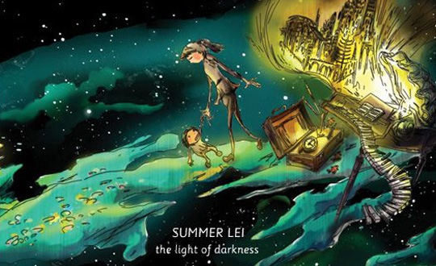

一场意外的车祸，使得这张《黑暗之光》提前到来，并为光夏拿到了2006华语音乐传媒大赏最佳国语女歌手。当然在国内甚至港台的主流音乐颁奖晚会上得奖原本就不说明什么，我也从来没有由于这样的原因而会对某些人表示崇拜。然而在这样的主流媒体中，这样一位那么多年来一直低调地真诚的做音乐的独立女歌手能够得到奖项，我们又怎么能不有那么一丝的激动，毕竟这个娱乐圈并没有那么多真挚的东西。而最重要的是，这张专集所表现出来的实力，值得这个奖项的称谓。
车祸后住院期间，光夏见到了很多亲人朋友，生活也突然停了下来，这个时候也许正适合回忆人生的过去和沉淀吧；后来再经历里她妹妹生产的过程，她听到了宝宝那非常有生命力的心跳，感觉到了生命本身那充满了希望的力量。而黑暗之光，便是那么一张弥漫着浓厚回忆色彩，却又静静地透露着那么一丝温暖希望的专集。
整张专集都是那么地低调而温暖，光夏的声音，伴随着钢琴声，还有经常出现的海浪声，轻轻地，一起一伏地，呼吸着，时而缓，时而急。而所谓的急，也不过是拾取海边发现的一枚贝壳时加快的脚步，也不过是秋千停滞在高点，然后荡下感受的一阵风。音乐盒的声音，上发条时的声音，旅行时伙伴们的碎语，维也纳街道上马车经过的马蹄声，穿插在钢琴的旋律中，我们仿佛跟随着光夏来到了她的过去，她的旅程中。 依次听完整张专集，实在像躺在夏日的树阴下，闭着眼听一位姐姐讲着故事，也似乎是自己中学时在家的某个雨夜，坐到阳台的窗前望天。全部的歌，似乎都没有所谓的高潮，和回忆一样，有的只是温暖，并偶尔带有一线希望。每到音乐上升时，都如轻柔的潮汐，浪声还没扬起，便已开始淡去。浪花从未激起，却已打动了我迟钝的心。